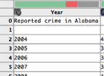
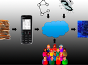
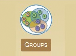
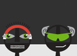

Data analysis is an inherently human process, involving creative collaborations over time and distances. The d^p (“deep”) project is a collaboration aiming to better enable people and data to work together over time, in settings ranging from Internet companies to enterprises to rural healthcare facilities. The problem is inherently multifaceted, a mix of issues in data management, statistical methods, scalable systems and human-computer interaction.
UPDATE: This research project is now complete. Many of the projects were pushed further in follow-on efforts, including startup companies Captricity and Trifacta, and the Apache MADlib open source project.
|  | Wrangler | Intelligent, interactive data cleaning and transformation. |
| CommentSpace | A system for collaborative visual analysis. | |
|  | Shreddr | Data in the First Mile, Usher and Shreddr. Leveraging clouds and crowds for data entry in developing regions. |
|  | SocialFlows | Mining, visualizing and browsing social topologies from email. |
|  | MADlib | An open-source library for scalable in-database analytics. |